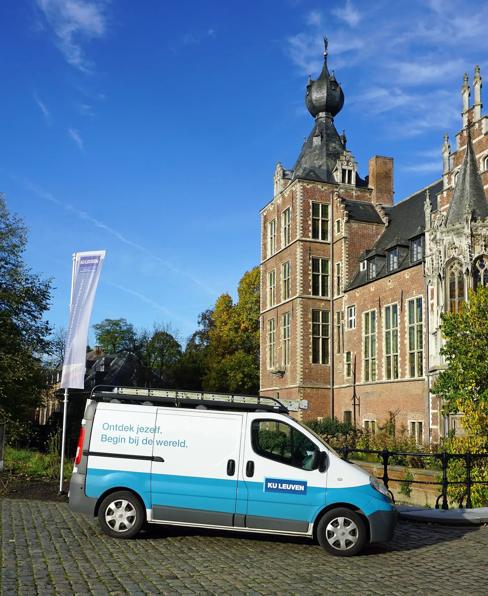

KU LeuvenMaster of Engineering: Computer Science. Track: Distributed Systems and Secure Software.
University of Lisbon (FCUL)Bachelor of Science: Computer Science and Engineering. Coursework includes First-Order Logic (19/20), Operating Systems (19/20), Computer Architecture (18/20) and Data Structures & Algorithms (17/20).

Arenberg · KU LeuvenLisboa
Research
Research internship at LASIGE.
Undergraduate Research Intern at LASIGE, the University of Lisbon research lab rated highest by FCT, Portugal's science agency. July to September 2025.
Prototyped LLM-based generation of program specifications using grammar-constrained prompting, the approach that preceded the paper's agentic pipeline.
Authored expert typestate annotations that form part of the ground truth for a 35-class JDK benchmark.
ASE 2026 is held in Munich, Germany, on 12–16 October 2026. It is the 41st edition of the IEEE/ACM International Conference on Automated Software Engineering.